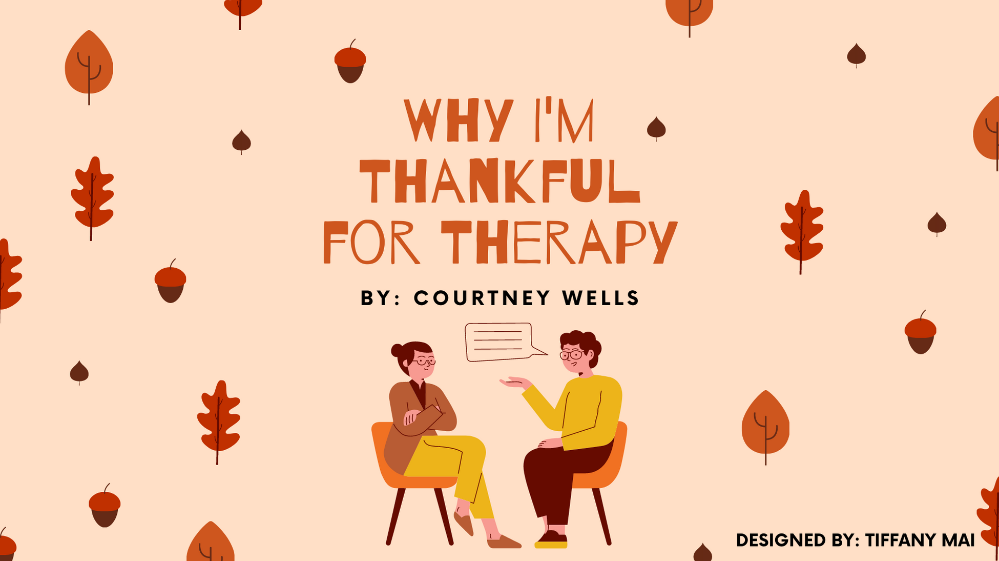
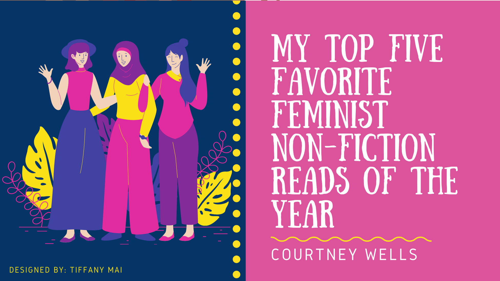
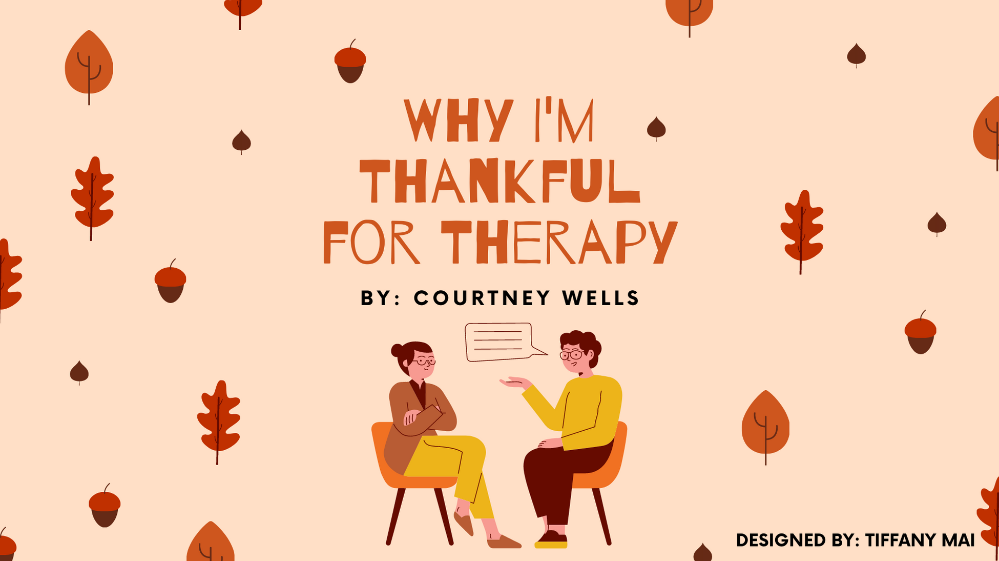
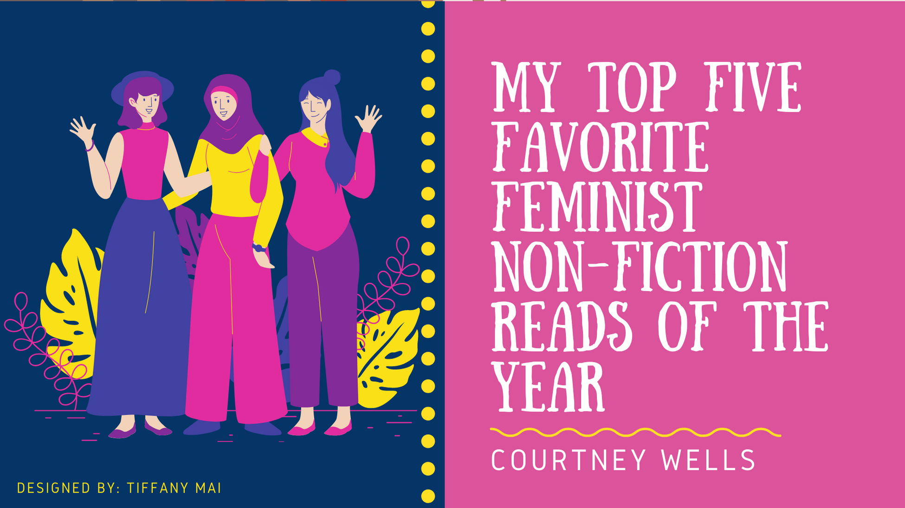
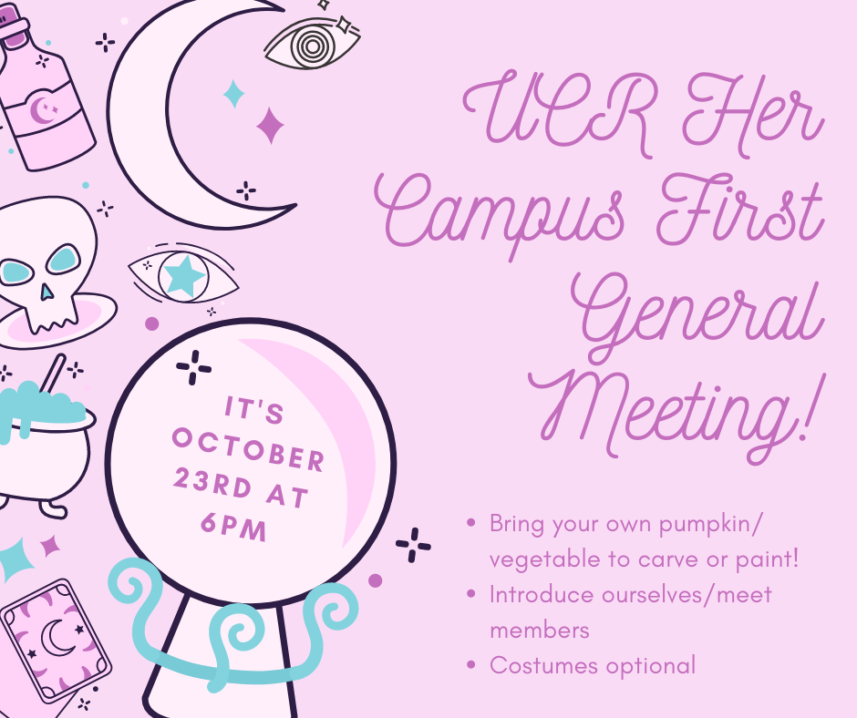
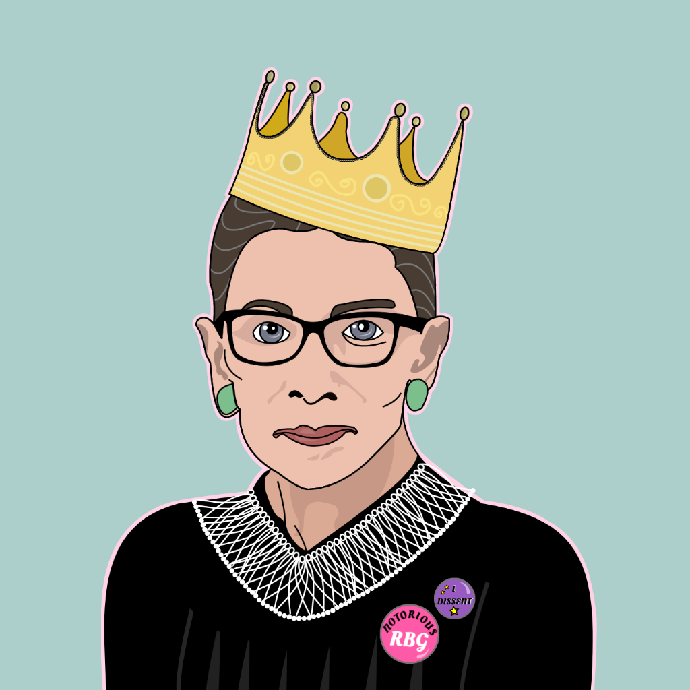
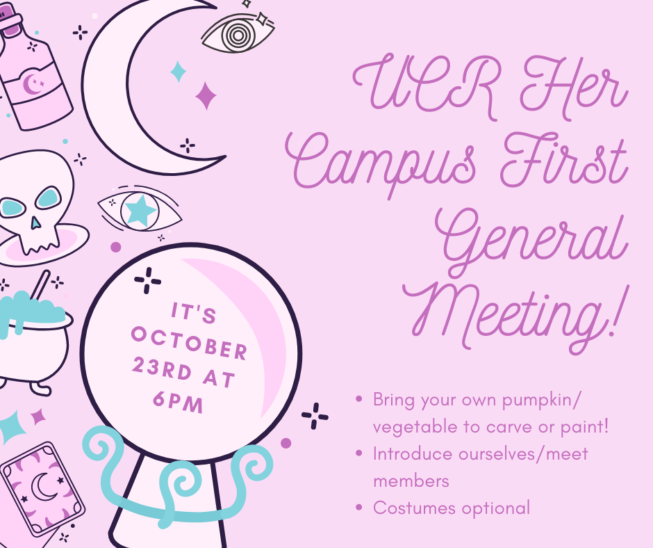
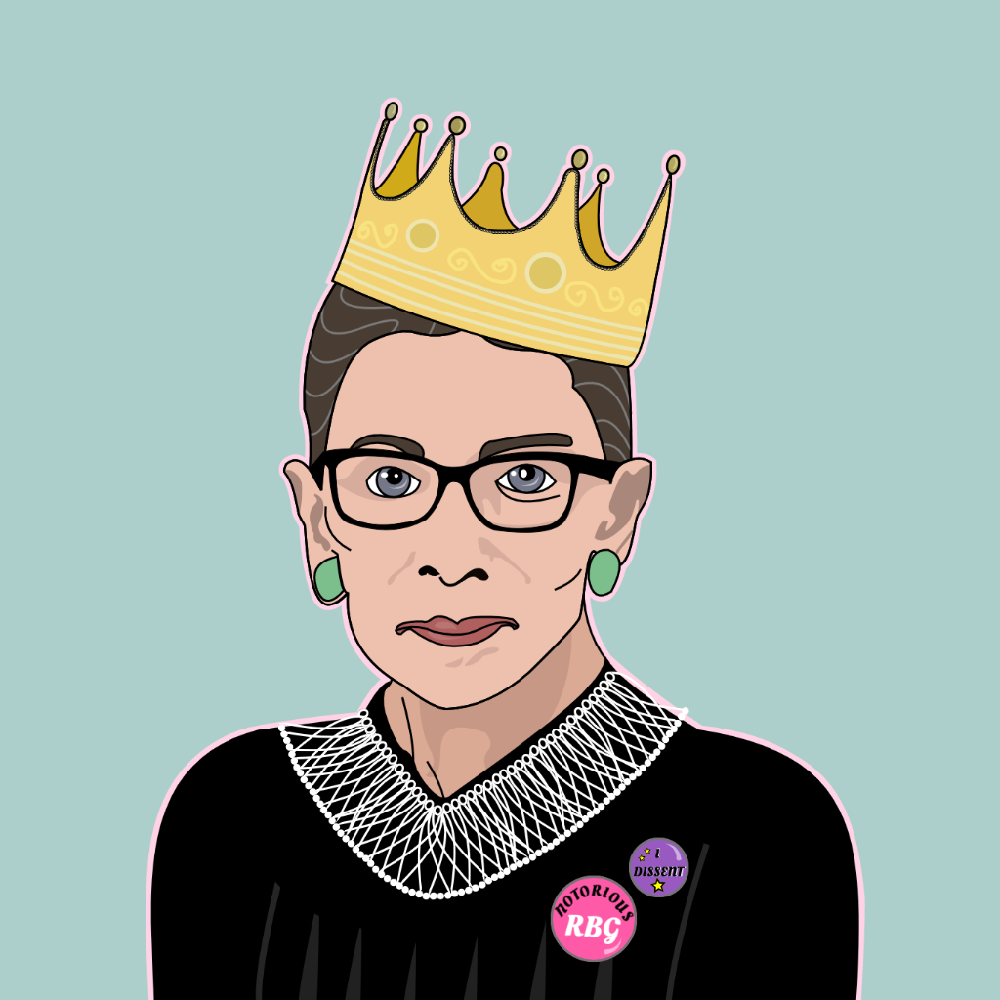

Tiffany Mai
Hello! I am a student at UC Riverside studying anthropology. My main interests lie in experiencing and learning about world cultures, playing with software design, exploring nature, and experimenting with photography and graphic design.
I am an aspiring anthropologist who wants to be a researcher and traveler that applies my eye for design and ear for listening to explore, communicate, and deepen my understanding of world cultures. I specifically have an interest in East Asian cultures, having taken 4 years of Chinese and earning the Bilingual Award in high school and continuing my language learning by studying Japanese in college.
Since I was little, I’ve always been inquisitive about how the culture and environment that shaped me. My genuine curiosity of why and how things worked the way they did was manifested in my naughtiness. As a mini scientist, I was notorious in my household for breaking things, from a TV screen protector that was supposedly child-proof to the kids' toys which I was a little too curious about what the inside looked like. This happened so much my parents gave me the moniker, the “magic finger.” Later, I started getting pretty good at fixing things and I like to think that was because I had so much experience breaking things in my childhood. My observational trial and error personality was one of the aspects that drew me into anthropology as it highlighted my soft skills and is also what I believe to be a path which will continue to foster my love and curiosity for the world around me.
This coupled with my traveling experiences to Taiwan, where the language, people, bullet trains, night market food, and history were simultaneously familiar and unfamiliar to the distinctly American culture of my hometown of Los Angeles, gave me culture shock and an absolute joy in all the novelty around me. It was a spark which lit the flame of my interest in different world cultures, specifically in East Asian countries. Together, these experiences drew me into cultural anthropology, as it is a science and art that unites my love for both understanding the richness of cultures, my experimental and inquisitive personality, and my interest in communicating what I’ve learned.
I was accepted into the UC Riverside's Honors program, a four year-commitment with rigorous classes and a final research/creative project in the form of a capstone project. For clubs, I am a social media specialist and cover designer at Her Campus, the number one magazine dedicated to college women. I am also part of Sakurabu, a club where students practice Japanese and exchange culture with international Japanese students. In the Fall of 2021, I will be part of the 3 heads of the academic journal, Audeamus, as the Design and Production Coordinator. I will also be an officer in Sakurabu as a co-secretary. In my free time you can catch me reading, playing with bots on Discord (especially Pokemon), taking nature photos, or using graphic design programs as a creative outlet.
Experience
Photographer & Yearbook Editor
• Completed wide range of photography assignments including studio portraiture to fashion photoshoots around LA
• Leveraged interpersonal skills to build rapport with subjects in order to tell their stories through photos
• Recognized as the staff photographer of the month for the quality and timeliness of submissions
• Experience with HTML, Adobe Photoshop, and other photo-editing software
• Edited and reviewed yearbook spreads
Her Campus Social Media Strategist
• Wrote, layout, and edited featured magazine articles on various social media platforms.
• Reviewed and enhanced social media pages and websites
• Collaborated with other designers and writers to find best theme to fit with topic
TASSEL Grammar Teacher
• Corrected essays, taught English, and corresponded to underprivileged students in Cambodia
• Assisted with event planning such as the yearly gala and other fundraisers
Education
University of California, Riverside
South Pasadena High School
University of Southern California
Portfolio
 






